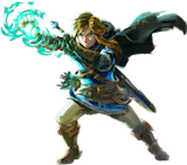
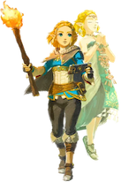
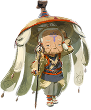

Link

In Tears of the Kingdom, Link wields various weapons, with his bow and arrow as a go-to choice. The game introduces an abilities system, granting combat and overworld abilities, including weapon fusion. The main goal is clear: obtain all Sage abilities and the Master Sword, then confront Ganondorf head-on. Link's journey involves heroic acts, including puzzle-solving and numerous boss fights.
Zelda

The heir to a power that imprisons darkness.She sacrificed her freedom over 100 years agoto keep Calamity Ganon sealed away and prevent him from further destroying Hyrule.
After Link helped free her from that long dutyi she committed herself to rebuilding and restoring Hyrule-but has now gone missing.
Impa
Being a hundred years old, Impa has been a loyal friend to the Hyrule royal family for several generations. As such, she has also seen the events that caused its near extinction. In Breath of the Wild, she was the Chief of the Sheikah. But in Tears of the Kingdom, she has now stepped down and trusted her granddaughter with that role.
